In our day-to-day real life situations, we have seen two lines intersect at a point or do not intersect in a plane. For example, two parallel lines in a railway track, do not intersect. Whereas, grills in a window intersect.
Similarly what happens when a curve and a line is given in a plane? The curve may be parabola, circle or any general curve.
Similarly, what happens when we consider intersection of a line and a circle?
We may get three situations as given in the following diagram
Figure 1
Figure 2
Figure 3
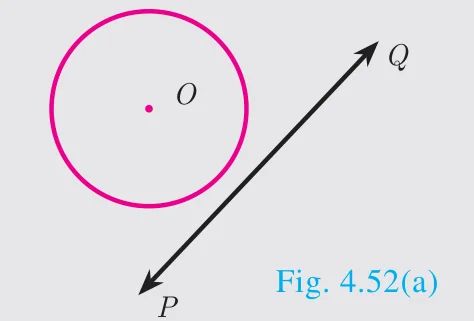
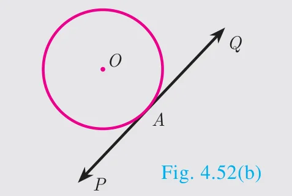
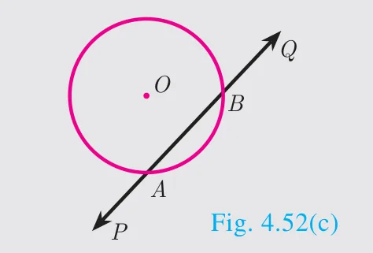
(i) Straight line \(PQ\) does not touch the circle.
(i) Straight line \(PQ\) touches the circle at a common point \(A\).
(i) Straight line \(PQ\) intersects the circle at two points \(A\) and \(B\).
(ii) There is no common point between the straight line and circle.
(ii) PQ is called the tangent to the circle at A.
(ii) The line PQ is called a secant of the circle.
(iii) Thus the number of points of intersection of a line and circle is zero.
(iii) Thus the number of points of intersection of a line and circle is one.
(iii) Thus the number of points of intersection of a line and circle is two.
Note
The line segment \(AB\) inscribed in the circle in Fig.4.52(c) is called chord of the circle. Thus a chord is a sub-section of a secant.
Do you know?
The word “tangent” comes from the latin word “tangere” which means “to touch” and was introduced by Danish mathematician, ‘Thomas Fineko’ in 1583.
Definition
If a line touches the given circle at only one point, then it is called tangent to the circle.
Real life examples of tangents to circles
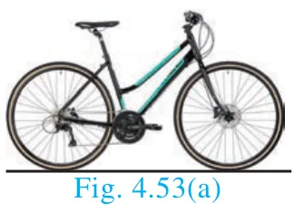
When a cycle moves along a road, then the road becomes the tangent at each point when the wheels rolls on it.
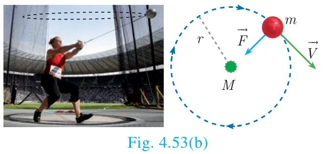
When a stone is tied at one end of a string and is rotated from the other end, then the stone will describe a circle. If we suddenly stop the motion, the stone will go in a direction tangential to the circular motion.
Some results on circles and tangents
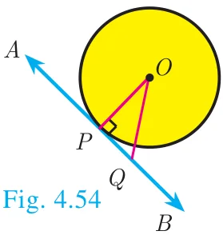
A tangent at any point on a circle and the radius through the point are perpendicular to each other.
(a) No tangent can be drawn from an interior point of the circle.
(b) Only one tangent can be drawn at any point on a circle.
(c) Two tangents can be drawn from any exterior point of a circle.
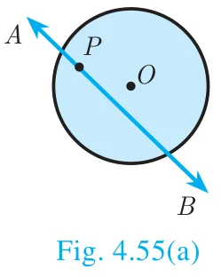
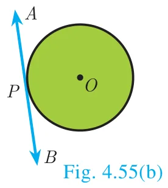
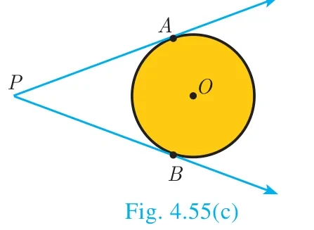
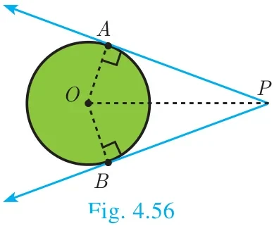
The lengths of the two tangents drawn from an exterior point to a circle are equal,
Proof : By 1. \(OA \perp PA,\ OB \perp PB\). Also \(OA = OB =\) radius, \(OP\) is common side. \(\angle AOP = \angle BOP\)
Therefore, by SAS Rule \(\Delta OAP \cong \Delta OBP\). Hence \(PA = PB\)
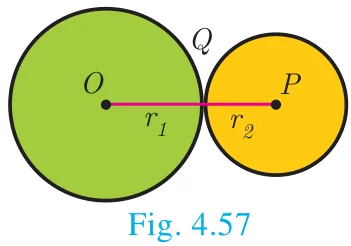
If two circles touch externally the distance between their centers is equal to the sum of their radii, that is \(OP = r_1 + r_2\)
Proof : Let two circles with centers at \(O\) and \(P\) touch other at \(Q\).
Let \(OQ = r_1\) and \(PQ = r_2\) and let \(r_1 > r_2\).
The distance between their centers \(OP = d\). It is clear from the Fig. 4.57 that when the circles touch externally \(OP = d = OQ + PQ = r_1 + r_2\).
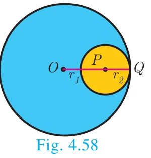
If two circles touch internally, the distance between their centers is equal to the difference of their radii, that is \(OP = r_1 - r_2\).
Proof : Let two circles with centers at \(O\) and \(P\) touch each other at \(Q\).
Let \(OQ = r_1\) and \(PQ = r_2\) and let \(r_1 > r_2\).
The distance between their centers \(OP = d\). It is clear from the Fig. 4.58 that when the circles touch internally, \(OP = d = OQ - PQ\)
\(OP = r_1 - r_2\).
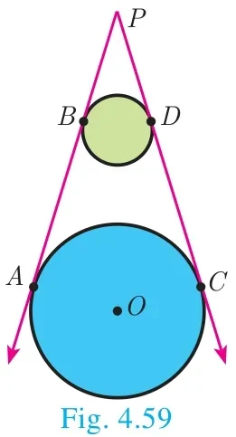
The two direct common tangents drawn to the circles are equal in length, that is \(AB = CD\).
Proof :
The lengths of tangents drawn from \(P\) to the two circles are equal.
Therefore, \(PA = PC\) and \(PB = PD\).
\(\Rightarrow PA - PB = PC - PD\)
\(AB = CD\)
Thinking Corner
Can we draw two tangents parallel to each other on a circle?
Can we draw two tangents perpendicular to each other on a circle?
Alternate segment
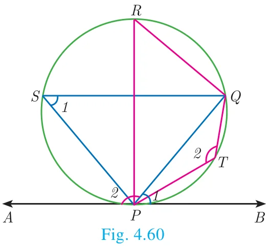
In the Fig. 4.60, the chord PQ divides the circle into two segments. The tangent AB is drawn such that it touches the circle at \(P\).
The angle in the alternate segment for \(\angle QPB\ (\angle 1)\) is \(\angle QSP\ (\angle 1)\) and that for \(\angle QPA\ (\angle 2)\) is \(\angle PTQ\ (\angle 2)\).
Theorem 6 : Alternate Segment theorem
Statement
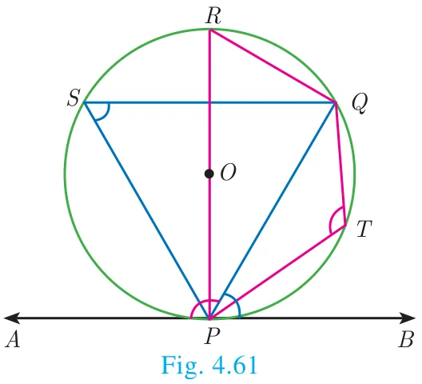
If a line touches a circle and from the point of contact a chord is drawn, the angles between the tangent and the chord are respectively equal to the angles in the corresponding alternate segments.
Proof
Given : A circle with centre at \(O\), tangent \(AB\) touches the circle at \(P\) and \(PQ\) is a chord. \(S\) and \(T\) are two points on the circle in the opposite sides of chord \(PQ\).
To prove : (i) \(\angle QPB = \angle PSQ\) and (ii) \(\angle QPA = \angle PTQ\)
Construction: Draw the diameter \(POR\). Draw \(QR\), \(QS\) and \(PS\).
Find the length of the tangent drawn from a point whose distance from the centre of a circle is 5 cm and radius of the circle is 3 cm.
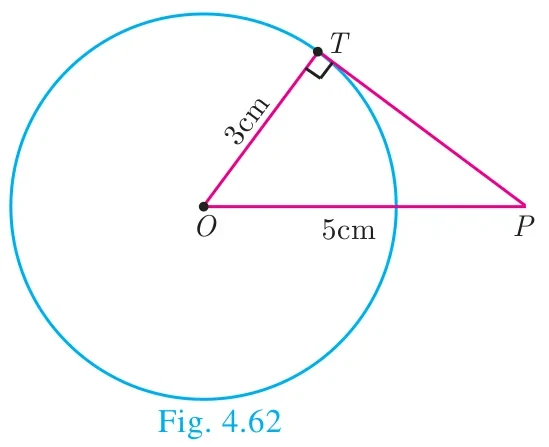
Solution
Given OP \(= 5\) cm, radius \(r = 3\) cm
To find the length of tangent \(PT\).
In right angled \(\Delta OTP\),
\(OP^2 = OT^2 + PT^2\) (by Pythagoras theorem)
\(5^2 = 3^2 + PT^2\) gives \(PT^2 = 25 - 9 = 16\)
Length of the tangent \(PT = 4\) cm
Example 4.25
PQ is a chord of length 8 cm to a circle of radius 5 cm. The tangents at P and Q intersect at a point T. Find the length of the tangent TP.
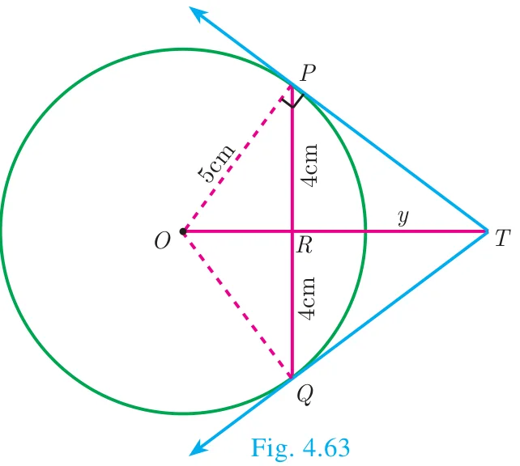
Solution
Let \(TR = y\). Since, OT is perpendicular bisector of PQ.
\(PR = QR = 4\) cm
In \(\Delta ORP\), \(OP^2 = OR^2 + PR^2\)
\(OR^2 = OP^2 - PR^2\)
\(OR^2 = 5^2 - 4^2 = 25 - 16 = 9 \Rightarrow OR = 3\) cm
\(OT = OR + RT = 3 + y\) ... (1)
In \(\Delta PRT\), \(TP^2 = TR^2 + PR^2\) ... (2)
and \(\Delta OPT\) we have, \(OT^2 = TP^2 + OP^2\)
\(OT^2 = (TR^2 + PR^2) + OP^2\) (substitute for \(TP^2\) from (2))
\((3 + y)^2 = y^2 + 4^2 + 5^2\) (substitute for \(OT\) from (1))
\(9 + 6y + y^2 = y^2 + 16 + 25\)
\(6y = 41 - 9\) we get \(y = \dfrac{16}{3}\)
From (2), \(TP^2 = TR^2 + PR^2\)
\(TP^2 = \left(\dfrac{16}{3}\right)^2 + 4^2 = \dfrac{256}{9} + 16 = \dfrac{400}{9}\) so, \(TP = \dfrac{20}{3}\) cm
Example 4.26
In Fig.4.64, \(O\) is the centre of a circle. \(PQ\) is a chord and the tangent \(PR\) at \(P\) makes an angle of \(50^\circ\) with \(PQ\). Find \(\angle POQ\).
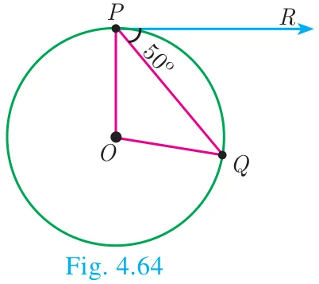
Solution
\(\angle OPQ = 90^\circ - 50^\circ = 40^\circ\) (angle between the radius and tangent is \(90^\circ\))
In Fig.4.65, \(\Delta ABC\) is circumscribing a circle. Find the length of \(BC\).
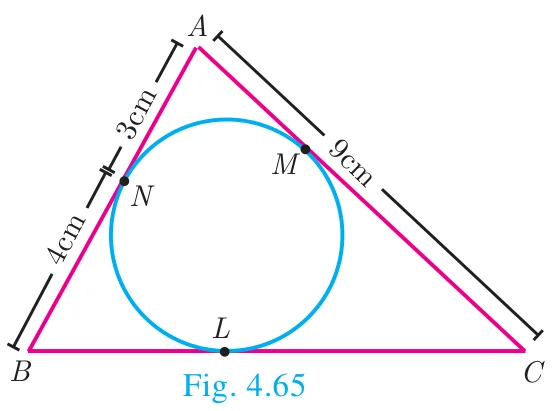
Solution
\(AN = AM = 3\) cm (Tangents drawn from same external point are equal)
\(BN = BL = 4\) cm
\(CL = CM = AC - AM = 9 - 3 = 6\) cm
Gives \(BC = BL + CL = 4 + 6 = 10\) cm
Example 4.28
If radii of two concentric circles are 4 cm and 5 cm then find the length of the chord of one circle which is a tangent to the other circle.
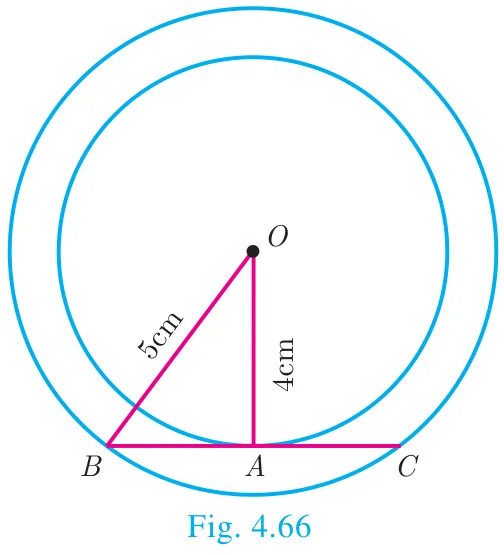
Solution
\(OA = 4\) cm, OB \(= 5\) cm; also \(OA \perp BC\).
\(OB^2 = OA^2 + AB^2\)
\(5^2 = 4^2 + AB^2\) gives \(AB^2 = 9\)
Therefore \(AB = 3\) cm
\(BC = 2AB\) hence \(BC = 2 \times 3 = 6\) cm
4.5.1 Construction
Construction of tangents to a circle
Now let us discuss how to draw
a tangent to a circle using its centre
a tangent to a circle using alternate segment theorem
pair of tangents from an external point
Construction of a tangent to a circle (Using the centre)
Example 4.29
Draw a circle of radius 3 cm. Take a point \(P\) on this circle and draw a tangent at \(P\).
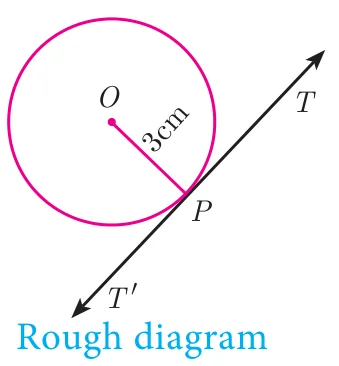
Solution
Given, radius \(r = 3\) cm
Construction
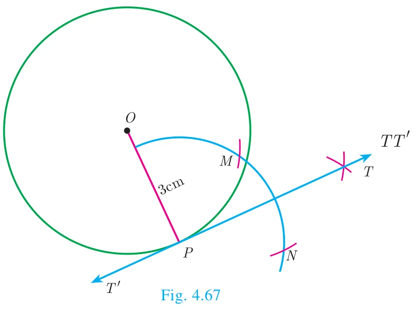
Step 1: Draw a circle with centre at \(O\) of radius 3 cm.
Step 2: Take a point \(P\) on the circle. Join \(OP\).
Step 3: Draw perpendicular line to \(OP\) which passes through \(P\).
Step 4: \(TT'\) is the required tangent.
Construct of a tangent to a circle (Using alternate segment theorem)
Example 4.30
Draw a circle of radius 4 cm. At a point \(L\) on it draw a tangent to the circle using the alternate segment.
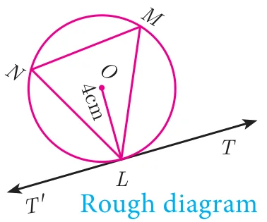
Solution
Given, radius \(= 4\) cm
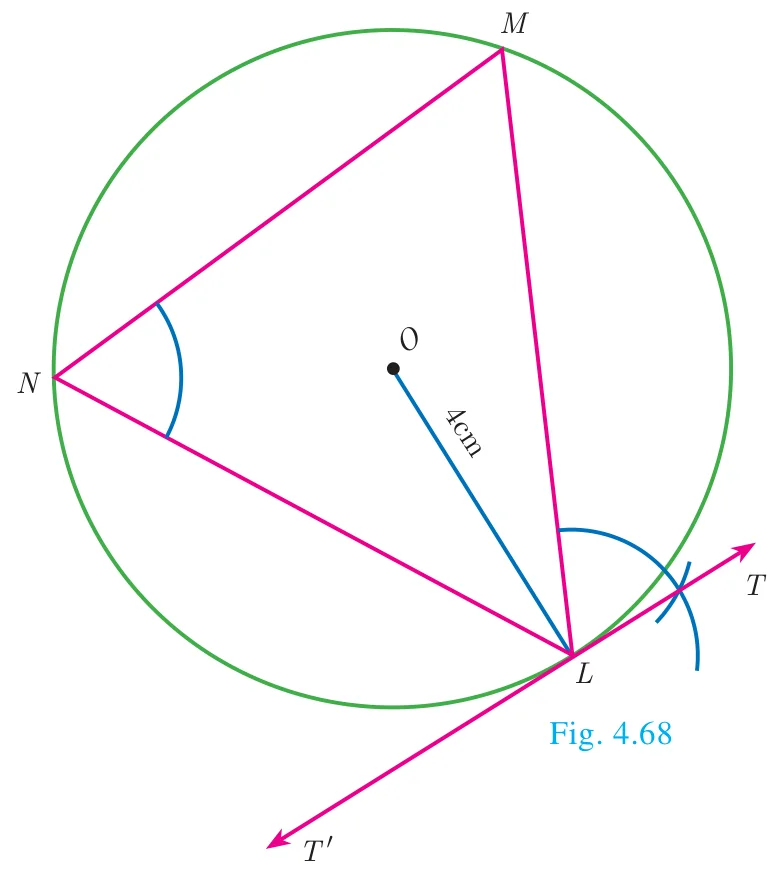
Construction
Step 1 : With \(O\) as the centre, draw a circle of radius 4 cm.
Step 2 : Take a point \(L\) on the circle. Through \(L\) draw any chord \(LM\).
Step 3 : Take a point \(N\) distinct from \(L\) and \(M\) on the circle, so that \(L\), \(M\) and \(N\) are in anti-clockwise direction. Join \(LN\) and \(NM\).
Step 4 : Through \(L\) draw a tangent \(TT'\) such that \(\angle TLM = \angle MNL\).
Step 5 : \(TT'\) is the required tangent.
Construction of pair of tangents to a circle from an external point \(P\).
Example 4.31
Draw a circle of diameter 6 cm from a point \(P\), which is 8 cm away from its centre. Draw the two tangents \(PA\) and \(PB\) to the circle and measure their lengths.
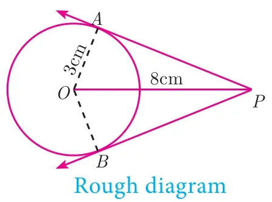
Solution
Given, diameter \((d) = 6\) cm, we find radius \((r) = \dfrac{6}{2} = 3\) cm
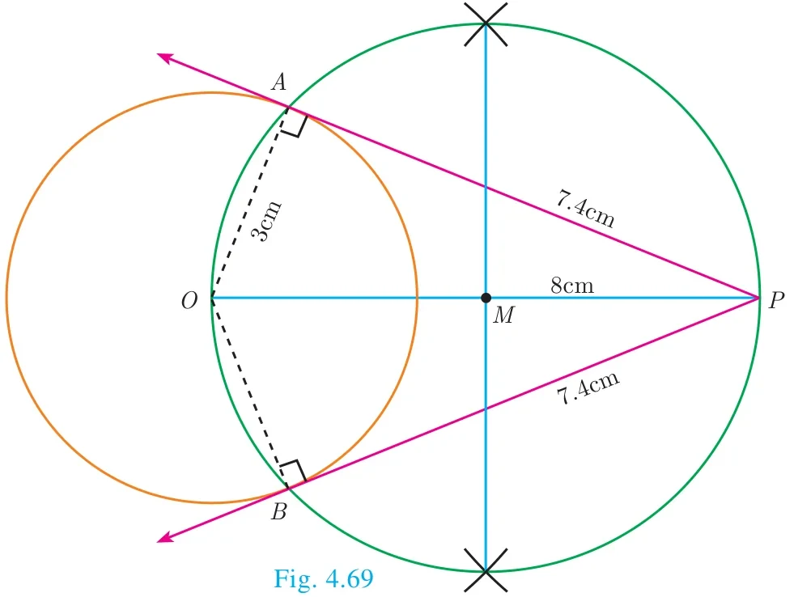
Construction
Step 1: With centre at \(O\), draw a circle of radius 3 cm.
Step 2: Draw a line \(OP\) of length 8 cm.
Step 3: Draw a perpendicular bisector of \(OP\), which cuts \(OP\) at \(M\).
Step 4: With \(M\) as centre and \(MO\) as radius, draw a circle which cuts previous circle at \(A\) and \(B\).
Step5: Join \(AP\) and \(BP\). \(AP\) and \(BP\) are the required tangents. Thus length of the tangents are \(PA = PB = 7.4\) cm.
Verification : In the right angle triangle \(OAP\), \(PA^2 = OP^2 - OA^2 = 8^2 - 3^2 = 64 - 9 = 55\)